Apresentação de marca • Identidade visual
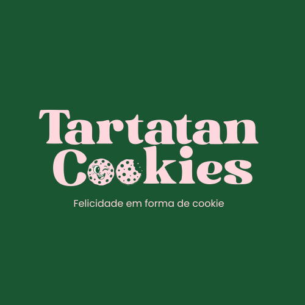
Uma marca criada para transformar cookies em experiências: delicada, divertida, afetiva e memorável. Nesta apresentação, você acompanha como a Tartatan ganhou forma, personalidade e um sistema visual próprio.
Começar a apresentação01 — Primeiro, a marca
Tudo começou com uma ideia simples:
criar uma marca de cookies que fosse tão gostosa de olhar quanto de saborear. A proposta da Tartatan parte do universo artesanal, mas ganha uma personalidade própria por meio de cores marcantes, formas orgânicas, linguagem divertida e um personagem que aproxima a marca das pessoas.
Felicidade em forma de cookie.
Essa frase resume o que a marca busca transmitir: não entregar apenas um doce, mas uma pequena pausa feliz no dia. O projeto foi desenvolvido para fazer essa sensação aparecer em todos os pontos de contato da Tartatan.
02 — A ideia por trás da estética
Como transformar sabor em identidade?
O conceito visual combina o aconchego de uma confeitaria artesanal com uma linguagem jovem e afetiva. A intenção foi criar uma identidade que pudesse ser reconhecida rapidamente e, ao mesmo tempo, tivesse espaço para contar histórias, brincar e criar vínculo.
Afetiva
Elementos delicados e uma linguagem próxima para transmitir carinho, conforto e a sensação de feito com cuidado.
Divertida
A marca não se leva a sério demais. Ela brinca com cookies, personagens, frases e situações do cotidiano.
Memorável
A combinação de verde, rosa, tipografia marcante e mascote cria uma assinatura visual própria.
O objetivo não era apenas deixar bonito.
Era fazer com que cada escolha visual ajudasse a contar a mesma história. A partir desse conceito, a identidade começou a tomar forma.
03 — A identidade ganha forma
A partir do conceito,
foi criado um sistema.
A identidade visual foi desenvolvida para funcionar como um conjunto, e não apenas como uma logo isolada. Marca, cores, tipografia, elementos gráficos e personagem trabalham juntos para construir reconhecimento.
Três formas, uma só marca.
A Tartatan conta com três variações de logotipo — principal, secundária e reduzida — acompanhadas de suas respectivas variações cromáticas, permitindo que a marca se adapte com naturalidade a qualquer espaço, do digital às embalagens e fachadas.
Logo Principal
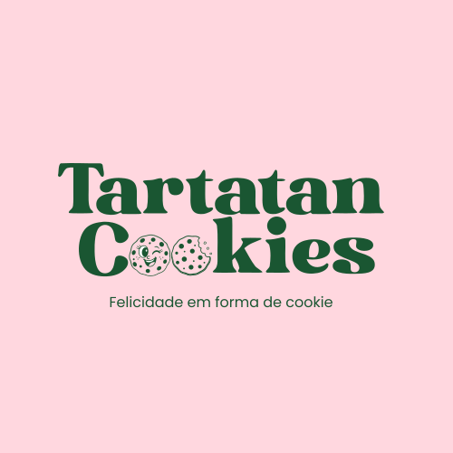
Variação de CorLogo Secundária
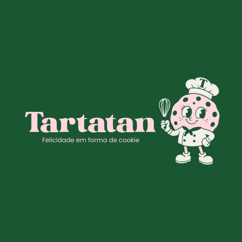
Secundária (Original)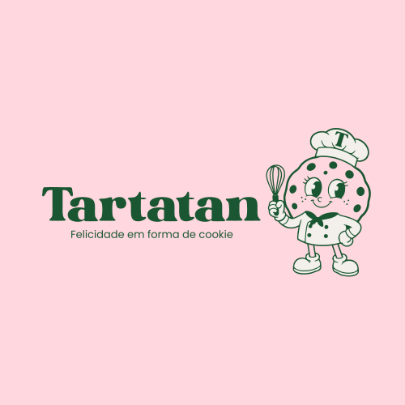
Variação de CorLogo Reduzida
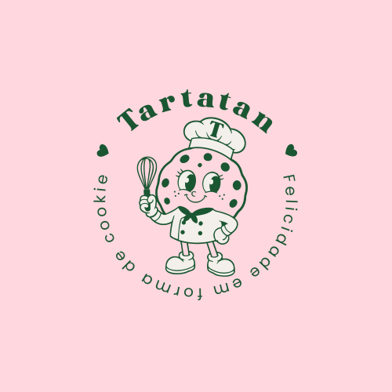
Variação de CorLogo
Uma assinatura visual que une o nome Tartatan Cookies à linguagem divertida e artesanal da marca.
Cores
O verde cria a base marcante da identidade, enquanto o rosa traz delicadeza, afeto e contraste.
Tipografia
A combinação tipográfica reforça o caráter editorial, acolhedor e contemporâneo da Tartatan.
04 — A marca ganha um rosto
E então apareceu o confeiteiro.
O mascote foi desenvolvido para transformar a identidade em personagem. Ele aproxima, humaniza e cria novas possibilidades de comunicação para a marca.
Reconhecimento: um elemento proprietário que ajuda a identificar a Tartatan mesmo sem a presença da logo.
Personalidade: uma figura simpática que traduz o jeito leve e acolhedor da marca.
Versatilidade: diferentes poses e versões permitem criar conteúdos, campanhas e materiais diversos.
Um personagem para cada história.
Além do personagem principal, foram desenvolvidas variações para que ele pudesse participar de diferentes situações e manter a comunicação da Tartatan viva e dinâmica.
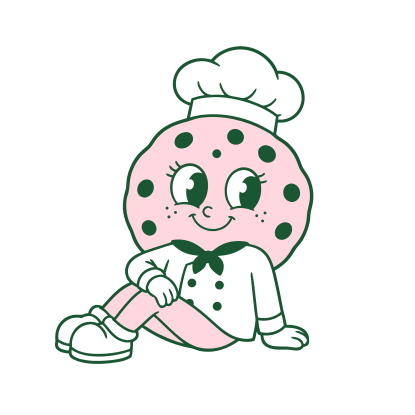
Versão Lateral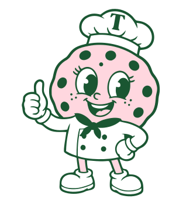
Variação 01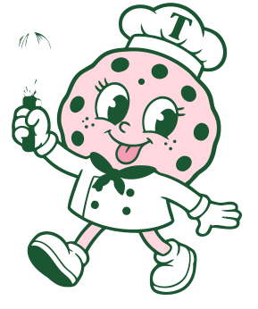
Variação 02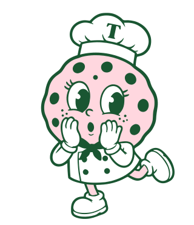
Variação 03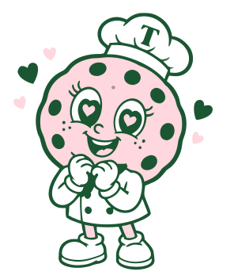
Variação 0505 — Elementos gráficos
Pequenos ícones, muita personalidade.
Para além da logo e do personagem, a Tartatan conta com um conjunto de ícones de apoio — pequenos elementos gráficos que reforçam a linguagem afetiva e divertida da marca em embalagens, cardápios e materiais de comunicação.
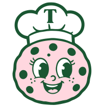
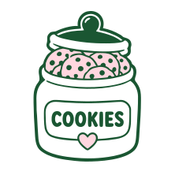
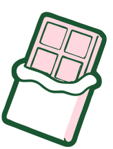
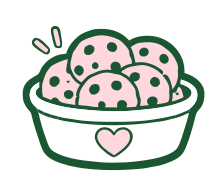
Consistência em cada detalhe: mesmo nos menores pontos de contato, esses ícones mantêm viva a identidade da Tartatan.
06 — A identidade sai do papel
Uma marca só funciona de verdade quando pode ser vivida.
Depois de definida a identidade, o próximo passo foi mostrar como ela se comportaria no mundo real. Foram desenvolvidas aplicações para aproximar a marca do consumidor e tornar a experiência Tartatan consistente em diferentes pontos de contato.
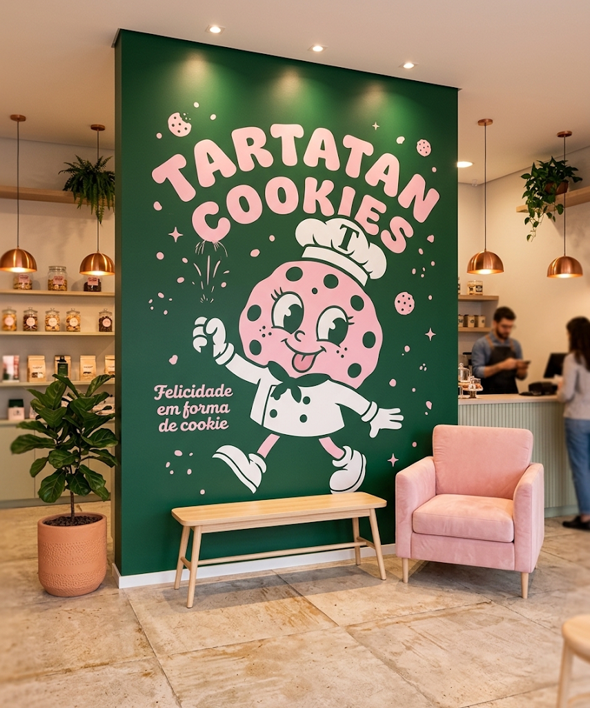
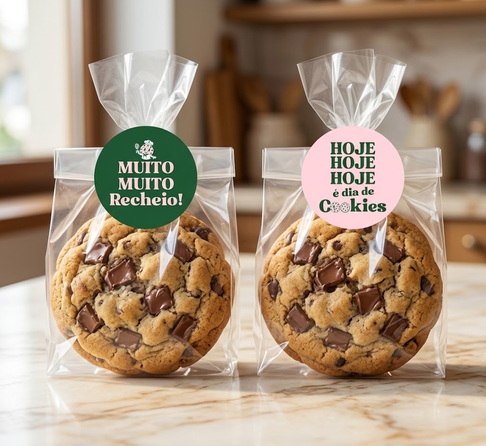
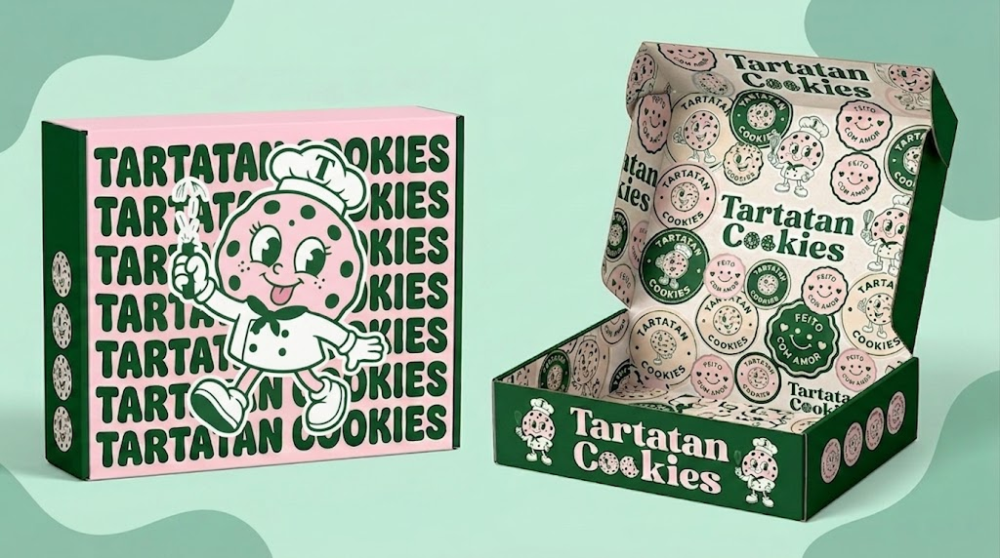
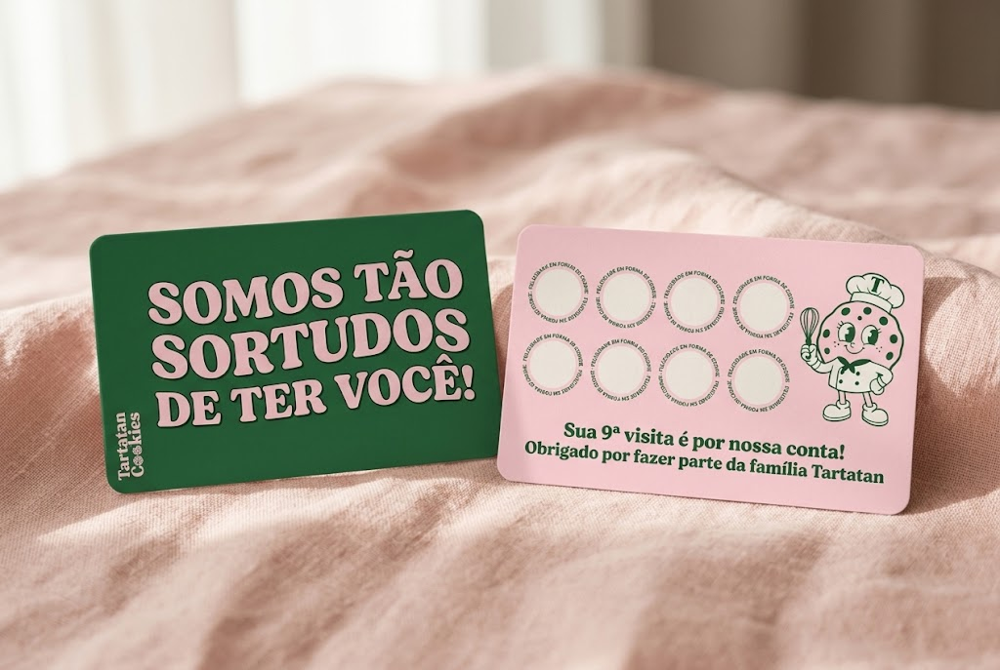
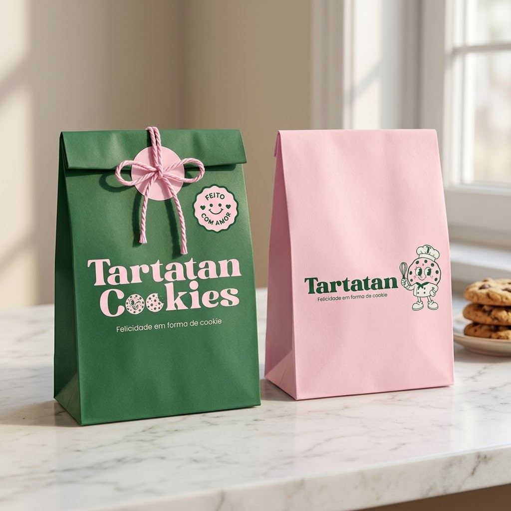
07 — A identidade vira conversa
Não basta parecer uma marca.
Ela precisa falar como uma.
A identidade também foi pensada para a comunicação. Cardápios, conteúdos e peças promocionais passam a usar a mesma linguagem visual, criando uma experiência coerente entre o produto e o digital.
Cardápio da casa
Diagramação pensada para apresentar os sabores da Tartatan com clareza, sem perder a leveza e o afeto que definem a marca.
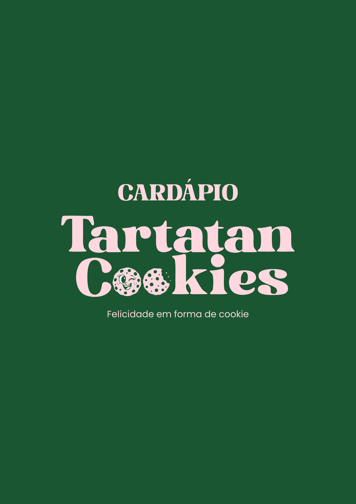
01 02
02
 03
03
 04
04
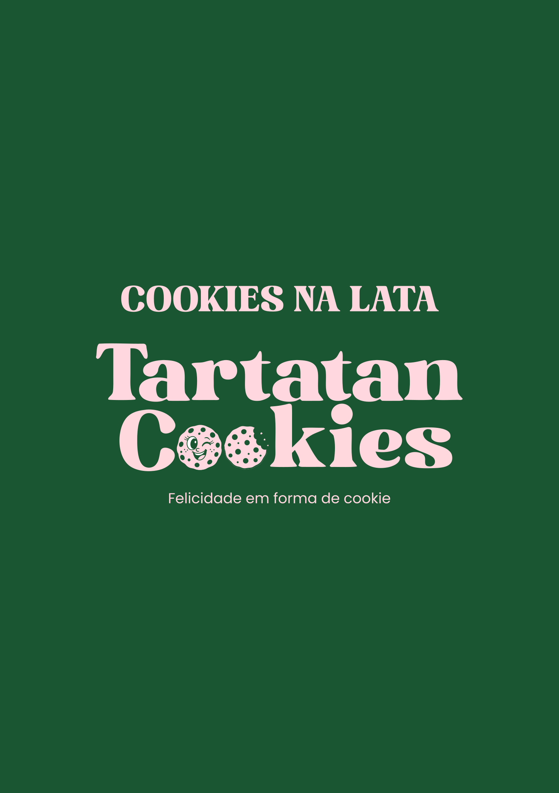
05 06
06
 07
07
Presença digital
A mesma linguagem visual acompanha a Tartatan também nas redes sociais, aproximando a marca do dia a dia do público.
 Post para Instagram
Post para Instagram
 Story para Instagram
Story para Instagram
Informar
Apresentar produtos, sabores e informações de forma clara sem perder a personalidade visual.
Desejar
Usar fotografia, composição e linguagem para transformar o produto em vontade de experimentar.
Conectar
Criar uma comunicação que pareça próxima, leve e reconhecível em diferentes formatos.
08 — O resultado
De um cookie, nasceu um universo.
O projeto foi além da criação de uma logo. Foi desenvolvido um sistema visual completo para que a Tartatan pudesse se apresentar, vender, comunicar e criar relacionamento mantendo a mesma personalidade.
Marca
Logo principal, secundária, reduzida e uma linguagem visual própria.
Identidade
Cores, tipografia, elementos gráficos e direção visual coerentes.
Personagem
Mascote e variações para ampliar as possibilidades de comunicação.
Aplicações
Fachada, embalagens, sacolas, caixa, cartão de fidelidade e materiais de comunicação.
Fazer a pessoa reconhecer a Tartatan antes mesmo de provar o cookie.
Esse é o papel de uma identidade bem construída: transformar diferentes peças e experiências em partes de uma mesma história. Aqui, cada elemento foi pensado para reforçar a mesma sensação: felicidade em forma de cookie.
09 — Vamos criar sua marca?
Como podemos trabalhar juntos.
Assim como a Tartatan, sua marca também pode ganhar uma identidade visual completa — com personalidade, consistência e um sistema pensado para crescer com o seu negócio. Confira os planos disponíveis:
projeto
- Logo principal, secundária e reduzida
- Arquivos em PNG e SVG
- Mascote principal (sem variações)
- 2 ícones de apoio da marca
- Tipografia e paleta de cores
projeto
- Tudo do Plano Inicial
- + 5 ícones de apoio
- + 6 variações do mascote
- Post de Instagram de brinde
- Stories de brinde
projeto
- Tudo do Plano Avançado
- + Cardápio completo
- Voucher de 1 mês incluso
- 3 posts criados por mim
Em qualquer plano posso fazer ajustes para que a identidade combine perfeitamente com a sua marca!
Vamos conversar sobre seu projeto